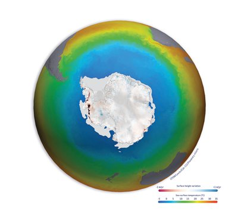
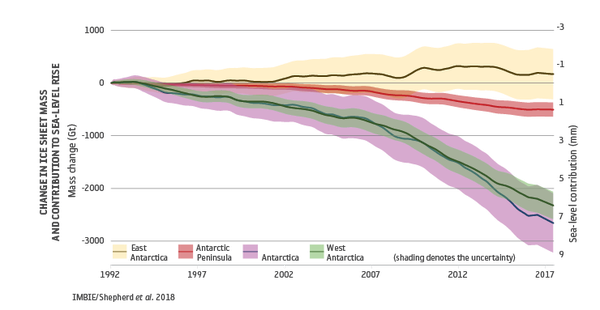

Climate Change: The Monsoon Pattern and its effect on agricultural practices.
We love Earth.
Climate is sometimes mistaken for weather. But climate is different from weather because it is measured over a long period of time, whereas weather can change from day to day, or from year to year. The climate of an area includes seasonal temperature and rainfall averages, and wind patterns. Different places have different climates. A desert, for example, is referred to as an arid climate because little water falls, as rain or snow, during the year. Other types of climate include tropical climates, which are hot and humid, and temperate climates, which have warm summers and cooler winters.
Climate change is the long-term alteration of temperature and typical weather patterns in a place. Climate change could refer to a particular location or the planet as a whole. Climate change may cause weather patterns to be less predictable. These unexpected weather patterns can make it difficult to maintain and grow crops in regions that rely on farming because expected temperature and rainfall levels can no longer be relied on. Climate change has also been connected with other damaging weather events such as more frequent and more intense hurricanes, floods, downpours, and winter storms.
In polar regions, the warming global temperatures associated with climate change have meant ice sheets and glaciers are melting at an accelerated rate from season to season. This contributes to sea levels rising in different regions of the planet. Together with expanding ocean waters due to rising temperatures, the resulting rise in sea level has begun to damage coastlines as a result of increased flooding and erosion
The cause of current climate change is largely human activity, like burning fossil fuels, like natural gas, oil, and coal. Burning these materials releases what are called greenhouse gases into Earth’s atmosphere. There, these gases trap heat from the sun’s rays inside the atmosphere causing Earth’s average temperature to rise. This rise in the planet's temperature is called global warming. The warming of the planet impacts local and regional climates. Throughout Earth's history, climate has continually changed. When occuring naturally, this is a slow process that has taken place over hundreds and thousands of years. The human influenced climate change that is happening now is occuring at a much faster rate.
Climate is not the same as weather, but the two phenomena are closely related. While weather refers to short-term conditions that can change quickly, climate determines the long-term character of a given place, for instance, whether it is temperate or tropical. The relationship between weather and climate is crucial: the former is subordinate to the latter. Climate determines temperatures, weather diversity, the traits of winters, rainfall totals, as well as the nature of meteorological phenomena such as the severity of storms. It is due to this delicate relationship that we are facing both temperature rises and more frequent weather extremes and natural disasters as a result of climate change. read more
Unprecedented levels of greenhouse gases
Levels of carbon dioxide and methane in the atmosphere – the
primary drivers of human-induced climate change – are at record levels and continue to rise.
Satellites are used to detect the smallest change in atmospheric concentration. They show carbon dioxide rose to
407 ppm in 2018, while methane concentrations are now around 150% above pre-industrial levels (Buchwitz, M. et
al. 2018) – and continue to rise.
By accurately detecting these small changes – to within 1 part per million for carbon dioxide – satellite
observations are helping the scientific community to improve global climate models and better predict the likely
warming effect and impacts resulting from increased levels of greenhouse gases in the atmosphere.
ESA's Climate Change Initiative Greenhouse Gas project is mapping the global distribution of near-surface carbon
dioxide and methane. The team undertaking research to improve on the current operational products initially
developed by the Climate Change Initiative, but now transferred and extended annually by the EU’s Copernicus
Climate Change Service.
The project team is using data from the latest generation of
satellites, including the Copernicus Sentinel-5P mission, NASA's Orbiting Carbon Observatory (OCO-2), and the
China National Space Administration’s TanSat mission to observe these greenhouse gases in the greatest detail
yet.
These satellites provide even higher resolution data and are equipped with the ability to distinguish
between natural and human sources of carbon dioxide and methane and in turn support emissions reduction policies
such as the Paris Agreement that are addressing global warming.
Shrinking of the cryosphere is widespread
The cryosphere – the areas on Earth where water is frozen – plays an important role in moderating global climate. Global warming has led to a widespread shrinking of the cryosphere in recent decades, across the polar ice sheets and glaciers, terrestrial snow cover, Arctic sea ice extent and thickness, with permafrost temperatures rising too, according to a recent report by the IPCC (IPCC Special Report on the Ocean and Cryosphere in a Changing Climate, 2019). In these often vast, remote areas, satellites have provided crucial insights into the rapid changes underway.
Changing Ice sheets
Polar ice-sheets store more than 99% of Earth’s freshwater ice on land. Even modest changes can influence global sea level, increase coastal flooding, and disturb oceanic currents. Both the Antarctic and Greenland Ice Sheets are changing rapidly. A recent ESA / NASA funded international assessment shows they are losing ice mass six times faster than in the 1990s – a rate that is currently tracking the IPCC’s high end climate warming scenario (IMBIE Shepherd, A. et al., 2020).
 Total combined loss of ice mass across Greenland and Antarctica is
estimated at 6.4 trillion tonnes between 1992 and 2017 – pushing global sea levels up by 17.8 millimetres.
Of the total sea level rise coming from melting polar ice sheets, around 60% (10.6 millimetres) was due to
Greenland ice losses and 40% was due to Antarctica (7.2 millimetres).
Using satellite data scientists estimate that polar ice sheets are responsible for a third of all sea level
rise.
Monsoon Pattern and What is the Changing Monsoon Patterns?
A monsoon is a seasonal change in the direction of the prevailing,
or strongest, winds of a region. Monsoons cause wet and dry seasons throughout much of the tropics. Monsoons are
most often associated with the Indian Ocean. Monsoons always blow from cold to warm regions.
Monsoon
withdrawal begins with the cessation of rainfall activity over northwest India for five straight days, an
anticyclone establishing itself in the lower troposphere and a marked reduction in moisture content.
Withdrawal starts from the last State where monsoon reaches, which is Rajasthan.
Withdrawal season continues from mid-September to almost end of October.
It is then replaced by the
retreating, or northeast monsoon in November.
The date for monsoon withdrawal has been corrected to September
17.
Below average rainfall is expected over most of India in September. The monsoon 2023 forecast for the month has
suggested that 32 out of 36 meteorological subdivisions will report below-average rainfall. Cumulatively, the
rainfall is expected to be 20 millimetres below the 1996-2013 average.
The forecast — carried out by Akshay Deoras, climate scientist at the University of Reading, the United Kingdom
— took stock of three climate models (UK Meteorological Office, European Centre for Medium-Range Weather
Forecasts and National Centers for Environmental Prediction) and combined them to get mean values.
According to Deoras, the impact of El Nino climate pattern is palpable. El Nino and La Nina are the warm phase and cool phases of a recurring climate pattern across the tropical Pacific Ocean called the El Nino-Southern Oscillation. La Nina ended its three-year run this year and El Nino announced its arrival. “This is a clear impact of the developing El Nino and the lack of favourable intraseasonal weather patterns that boost monsoon rainfall (rainfall in July 2023). This is allowing the penetration of dry air from the regions to the west of India, such as Pakistan,” Deoras said. However, Deoras expressed caution, as there are no clear indications if these intraseasonal weather patterns will remain weak or absent throughout the entirety of September. “There is, however, an indication of this happening (the absence of intraseasonal weather patterns) during the first fortnight of September, so the rainfall deficit across the country appears highly likely in this period,” Deoras said. The all-India weighted average rainfall for southwest monsoon 2023 is likely going to be below average or 96 percent below the long-period average of 1971 to 2020, said the climate cientist. for more information click here:
Effect on agricultural practices
- The 2023 southwest monsoon season in India started late, with the initial two weeks experiencing a significant rainfall deficiency of 52.6% below the normal long-period average(LPA). However, as of July 30, 2023 there was an overall 6% surplus rainfall. This turnaround has positively impacted kharif crop plantings. However, concerns persist regarding the potential impact of the approaching El Nino phenomenon on rabi crops. read more
What is the Long-Period Average (LPA) of Rainfall?
The IMD defines the "LPA of rainfall" as the average rainfall recorded over a specific region for a long period, like 30 or 50 years. Based on this, the IMD classifies rainfall into five categories on an all-India scale:
- Normal or near normal: Rainfall between 96-104% of LPA.
- Below normal: Rainfall between 90-96% of LPA.
- Above normal: Rainfall between 104-110% of LPA.
- Deficient: Rainfall less than 90% of LPA.
- Excess: Rainfall more than 110% of LPA.
What are Kharif and Rabi Crops?
Kharif Crops:
- Kharif crops are sown during the monsoon season, from June to October, and harvested in the late summer or early autumn.
- They depend on the southwest monsoon for irrigation and growth.
- Major Kharif crops include rice, maize, sorghum, pearl millet (bajra), finger millet (ragi), groundnut and pulses like pigeon pea (arhar) and green gram (moong).
- They account for about 55% of the total foodgrain production in India.
Rabi Crops:
- These crops are sown around the Retreating Monsoon and Northeast monsoon season, which begins in October and are called rabi or winter crops.
- The harvest for these crops happens typically during April and May, during the summer season.
- Major Rabi crops are wheat, gram, peas, barley etc.
- A warm climate is required for seed germination and cold climate for the growth of crops.
What is the Impact of Monsoon on Indian Agriculture?
Positive Impacts:
Increased Crop Production: A major portion of the country's crop area is completely dependent on Monsoon rains as they're not equipped with methods of manual irrigation.
- Adequate rainfall during the monsoon season leads to increased soil moisture and promotes the growth of crops, resulting in higher agricultural output.
- The availability of water supports the cultivation of a variety of crops, including rice, wheat, millets, and pulses.
Economic Boost: Successful monsoon seasons contribute to rural prosperity by providing income to farmers and laborers, which, in turn, stimulates demand for goods and services in the rural economy.
- This increased economic activity has a positive impact on overall national growth.
Recharge of Groundwater: The monsoon helps recharge groundwater resources, which is crucial for sustainable agricultural practices in regions where water scarcity is a challenge.
Negative Impacts:
Erratic Monsoon Patterns: The monsoon's timing, intensity, and distribution are unpredictable, leading to uncertainties in agricultural planning and crop management.
- Delayed or early monsoons can disrupt planting schedules and affect crop yields.
Droughts and Floods: Monsoon failure or excess rainfall can lead to droughts or floods, respectively.
- Both scenarios can be disastrous for agriculture. Droughts result in water shortages, crop failures, and reduced yields, while floods can damage crops, wash away fertile topsoil, and lead to livestock losses.
Crop Losses: Prolonged and excessive monsoon rains can cause crop diseases, reducing crop quality and yield. These conditions also hinder farmers' ability to conduct agricultural operations effectively.
Soil Erosion: Heavy rainfall can lead to soil erosion, which depletes soil fertility and affects agricultural productivity in the long run.
- Soil erosion also impacts water bodies and can lead to siltation in reservoirs, reducing their storage capacity.
Food Price Inflation: Inconsistent monsoon patterns can affect crop production and lead to shortages, resulting in food price inflation.
What is El Nino and La Nina and there Implications on Agriculture?
El Nino:
During El Niño, trade winds weaken. Warm water is pushed back east, toward the west coast of the Americas.
El Niño means Little Boy in Spanish. South American fishermen first noticed periods of unusually warm water in the Pacific Ocean in the 1600s. The full name they used was El Niño de Navidad, because El Niño typically peaks around December.
El Niño can affect our weather significantly. The warmer waters cause the Pacific jet stream to move south of its neutral position. With this shift, areas in the northern U.S. and Canada are dryer and warmer than usual. But in the U.S. Gulf Coast and Southeast, these periods are wetter than usual and have increased flooding.
El Niño also has a strong effect on marine life off the Pacific coast. During normal conditions, upwelling brings water from the depths to the surface; this water is cold and nutrient rich. During El Niño, upwelling weakens or stops altogether. Without the nutrients from the deep, there are fewer phytoplankton off the coast. This affects fish that eat phytoplankton and, in turn, affects everything that eats fish. The warmer waters can also bring tropical species, like yellowtail and albacore tuna, into areas that are normally too cold.
La Nina:
La Niña means Little Girl in Spanish. La Niña is also sometimes called El Viejo, anti-El Niño, or simply "a cold event." La Niña has the opposite effect of El Niño. During La Niña events, trade winds are even stronger than usual, pushing more warm water toward Asia. Off the west coast of the Americas, upwelling increases, bringing cold, nutrient-rich water to the surface.
These cold waters in the Pacific push the jet stream northward. This tends to lead to drought in the southern U.S. and heavy rains and flooding in the Pacific Northwest and Canada. During a La Niña year, winter temperatures are warmer than normal in the South and cooler than normal in the North. La Niña can also lead to a more severe hurricane season.
During La Niña, waters off the Pacific coast are colder and contain more nutrients than usual. This environment supports more marine life and attracts more cold-water species, like squid and salmon, to places like the California coast. read more
CONTACT
Fan? Drop a note!
Phone: +91 9389146371
Email: vs7579030670@gmail.com